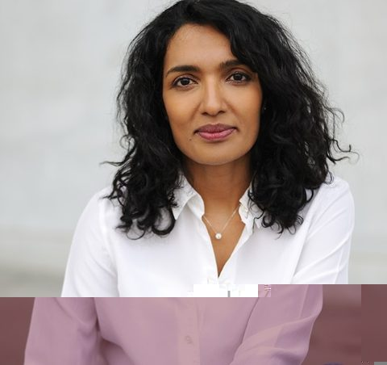

Ceenu George
Professor of Human-Computer Interaction
Technische Universität Berlin · Faculty IV
I design AR/VR systems that keep people aware of what intelligent technology is doing, by working at the edges of attention.
Research
What should technology optimise for, if not our attention?
Many products are built to capture attention, and as AI takes over more of our tasks, that choice matters more. I am interested in a different priority: systems that support curiosity and understanding without demanding more of our focus.
When people navigate, write or search, they usually just want to get from A to B. They rarely stop to understand the system they are using. Yet that understanding matters more as AI becomes more autonomous and shapes more of our decisions.
I think the answer lies in peripheral perception, the background awareness we keep of our surroundings without looking at them directly. By engaging people at the edges of attention, systems can help them notice patterns and behaviours without interrupting their main task. That is why my lab builds peripheral interfaces, especially in AR/VR and hybrid environments where physical, 2D and 3D spaces meet.
- Peripheral interactionInterfaces that stay unobtrusive and align with how perception and attention actually work.
- Hybrid realityMoving between physical, 2D and 3D spaces, and across the reality–virtuality continuum.
- Awareness of AIHelping people follow what automated systems are doing, so they keep curiosity and agency.
Publications
About
Ceenu George is a Professor of Human-Computer Interaction at Technische Universität Berlin, where she founded and leads the HCI group in the Faculty of Electrical Engineering and Computer Science. She brings more than 15 years of combined academic and industry experience in HCI and digital product development.
Before joining TU Berlin she was a Senior Researcher in Google's Trust and Safety research team in Munich, and a Visiting Professor (W3) at the Human-Centered Artificial Intelligence lab of the University of Augsburg. She received her doctorate (Dr. rer. nat., summa cum laude) from LMU Munich with a dissertation on virtual reality interfaces for seamless interaction with the physical reality. Earlier, she led UX research and digital products at American Express in London and Munich.
Career
- 2023 – nowProfessor of Human-Computer Interaction · TU Berlin
- 2022 – 2023Senior Researcher, Trust and Safety · Google, Munich
- 2021 – 2022Visiting Professor (W3), Human-Centered AI · University of Augsburg
- 2021Visiting Researcher, Trust and Safety · Google, Munich / San Francisco
- 2016 – 2021Researcher and Postdoc, Media Informatics Group · LMU Munich
- 2010 – 2016UX Researcher, Product Manager, Senior Digital Product Manager · American Express and PAYBACK, London / Munich
- 2008 – 2009Analyst, UNODC Vienna; Developer, Goldman Sachs London
Education
- 2020Dr. rer. nat., summa cum laude · LMU Munich
- 2012M.Sc. Human-Centred Computer Systems · University of Sussex
- 2010B.Sc. Computer Science with Business · University of Bath
Awards
- 2023 – 2026Paper awards at CHI '24, CHI '26 and MUM '23 · research on AI-supported interaction systems
- TU BerlinSupervised student work awarded the Rolf-Niedermair Prize
- 2021Nominated by LMU Munich for the GI Dissertation Award
Teaching
- Introduction to Human-Computer Interaction
- Advanced AR/VR: Participatory XR Development for Inclusion, with Lebenshilfe Berlin
- Mediengestaltung: Redesign TikTok with Privacy by Design
- Courses in AR/VR, Unity and interaction design at TU Berlin, LMU Munich and the University of Augsburg
- Co-host of Mixed Reality, a podcast on AR/VR interaction that accompanies university courses
Service
- Associate Chair, CHI 2022–2026
- Expert Board, VR/AR Special Interest Group, Gesellschaft für Informatik
- Co-founder, Women Academic Leaders in HCI mentoring circle
- Founder and host, BUA Doctoral Colloquium on HCI
- Reviewer for IEEE VR, ISMAR, CHI, IEEE TVCG and ACM TOCHI
Contact
Interested in a thesis, a collaboration or a talk? Write to me.
I give talks on human–AI collaboration and on the future of collaboration in hybrid spaces, where people work together across physical and virtual environments.
- ceenu.george@tu-berlin.de
- Office
- Room EN-358
TU Berlin, Faculty IV - Elsewhere
- ORCID · Podcast on Spotify · Lab website